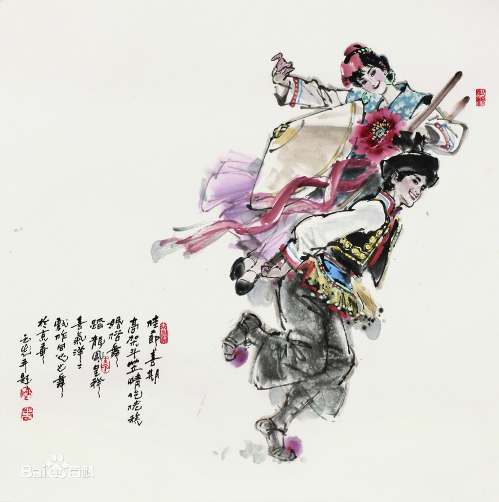

- 民族简介
- 文化习俗
- 历史发展
- 旅游介绍
仡佬族
仡佬族 仡佬族，族源和古代僚（lǎo）人有关，民族语言为仡佬语，属汉藏语系，没有本民族的文字，通用汉文。仡佬语崇拜祖先， 奉祀竹王、蛮王老祖、山神。 仡佬族集中聚居在贵州省北部的务川和道真两个仡佬族苗族自治县和石阡县，其余分别散居在安顺、平坝、普定、关岭、清镇、正安、凤岗、松桃、黔西、六枝、织金、大方等二十多个县市。 根据2010年第六次全国人口普查统计，仡佬族总人口数为550746人。
族称
仡佬族原来分为许多不同的支系，每个支系的名称各不相同。 新中国成立后，经各地仡佬族代表协商，报经国务院同意，1956年公布统一称为仡佬族。 1983年，随着民族识别、民族成分恢复工作的进行，根据国家的民族政策，经县以上政府批准，又有25万多人恢复了仡佬族民族成分 。">
信仰
仡佬族崇拜祖先， 奉祀竹王、蛮王老祖、山神。有本民族专司祭祀、祈福求寿、退鬼、超度亡灵的巫师。 仡佬族人创业、生活在崇山峻岭之中， 衣食住行与山林息息相关， 产生了万物有灵的观念。有些人家对古树巨石顶礼膜拜， 正月十四和三月初三皆献酒、肉、糍粑祭奠， 祈保子孙安康。每逢旱、涝、病、虫灾， 便挂善募捐， 请道士设坛打醮作法事， 祈祷诸神禳灾保平安。 住处附近山林中最大最粗的那棵古树常会被作为神树来祭祀和崇拜。一旦选定后， 则要对该地区实行封山， 禁止任何不当的行为， 包括禁止砍树和放牧， 这在客观上保护了当地的植被资源， 维持了生态环境 。
建筑
仡佬族的居住依地形的不同而有所差异。大多同宗聚族居住，一个宗族的各个家户毗邻建房形成村寨。住房构造形式及建筑材料，则视其经济条件、人口多少，地理环境而有所不同。居住在丘陵河谷、平坝地区的仡佬族，多依山傍水建房，房屋一般较高；居住在高山的仡佬族群众，通常选取向阳避风处建造，房屋大多比较低矮。往往注重房屋地址的选择，有“山管人丁水管财”之说。 建筑房屋时，房屋的高度喜欢选取尾数为八的尺寸，以中柱为例，取一丈六顶（尺）八，其余依次类推，其实是选取谐音，表达对家庭的美好愿望。房屋的式样有独间、二间、长三间、长五间、两重堂、三重堂、三合院和四合院等。除独间、二间外，其余的房屋都是以位于正中间的一间作中堂，设家龛，专门用于祭祀、会客，一般不铺设楼板。两侧的房屋称为“小二间”，通常分隔为前后两间，前面一间作厨房，后面一间作卧室，多有天、地楼板，地楼约高一米，搭梯而上。地楼底下可贮放杂物或者作鸡鸭舍。中间堂屋比两边卧房和厨房要凹进，形成一个厅口。有依山建“吊脚楼”房者，设栏杆走廊，楼上住人，楼下作畜厩。过去多为土木竹结构的草房，新中国成立后，经过土地改革，社会经济逐渐发展，农村住房日益改善。20世纪70年代石木结构的房屋盛行一时。20世纪80年代以后，由于人们生活水平的提高，大都修建砖石结构的瓦房和楼房，在交通方便的地方，钢筋混凝土的多层楼房逐渐兴起 。
服饰
仡佬族的服装文化因时损益，独具特色。 清代及其以前，服装多为家织麻布染青蓝二色制成，男着无领长衫，抄襟，长至膝下，袖大而短，常束腰带，劳动时撩衣前后一角扎于腰间。 女衣短装，抄襟，缀花边。据史书记载，大约在十九世纪中叶，仡佬族妇女上衣短仅及腰，袖背上绣鳞状花纹，下穿无褶长桶裙，整个裙子分为三段，中段用羊毛织成，染成红色，上下两段多用麻织，一般有青白色条纹，外罩青色无袖长袍，长袍前短后长，均绣有花纹，穿时从头上套下，脚穿钩尖鞋。 民国以后，各民族文化交流，互相学习，取长补短，审美观随社会发展而逐渐改变，无论男女老少，服饰逐渐与当地的汉族一致。 如今，仡佬族的日常服饰日益多样化，个性化，各种式样纷繁。质地从单纯的棉布、涤卡发展为毛料、麻纱、涤丝等，农村的仡佬族群众也是一季多衣，只有在各种节日庆典中才会特意穿戴本民族服饰 。
饮食
在饮食上，主食以玉米（山区）、稻米（平坝地区）为主，其次是各种豆类、麦子、荞子及薯类，喜吃酸辣食物和糯米粑粑等。仡佬族副食中，以糯米糍粑为珍贵食品，年节打粑“祭祖”，喜庆待客，端阳送亲家，重阳献新送亲友，这一习俗一直保存至今。 咂酒也是仡佬族的特色饮食。制作时以玉米、小麦、小米、高梁为原料，经过煮熟以后，发酵装缸。装缸时，先用两根手指大、约一米长的水竹竿（其中一根用火燎抈弯），除顶端留一竹节外，其余竹节打空，插入缸中后再密封。密封的时间越长，酒味越醇浓。饮用时，将顶端的竹节打空，直竿进空气，弯竿作吸具。无论筵席或平时待客，都按照老幼尊卑依次吸吮。民国《正安县志》稿有“万颗明珠一瓮收，王侯到此也低头。五龙抱住擎天柱，吸尽黄河水倒流”的诗句记载。 油茶的制作也很特别，先用猪油于锅内爆炒青茶， 然后掺水熬煮， 待水微干， 用木瓢搡茶成糊状， 曰“茶羹”。饮时，视饮量及浓淡， 将茶羹用猪油煎炒少许， 掺水煮沸， 再放猪油、油渣、食盐、花椒、熟芝麻、黄豆、花生粉， 即可饮用。其味浓烈喷香， 别具风味。今天道真的油茶已形成系列， 主要有油茶鸡蛋、油茶汤圆、油茶稀饭、油茶面条等 。
历史
学界一致认为仡佬族的族源和古代“僚”（读音为老）人有关。在住房、服饰、饮食、丧葬和穿耳等风俗习惯上，也保留有大量与古代僚人相似的特征。比如贵州普定县窝子乡和高阳乡的仡佬族，到十九世纪末仍然还保留有“打牙”习俗。 古代僚人很早就在中国西南地区生存。在汉代建立牂牁郡以前，这里已有若干个部落集团，而以夜郎最为强大。公元3至5世纪时，由牂牁迁入四川的僚人，编入了封建国家的户籍，并且向封建王朝缴纳赋税。公元5世纪时，他们已能制造金属的矛和盾、刺鱼工具和铜爨等等，并用麻类纤维织成细布。7世纪以后，四川僚人的商品交换日益频繁，僚布的质量很好，成为必须上缴给封建王朝的贡品。直到宋治平年间（11世纪中叶），有的僚人领主还霸占大量土地，拥有数千户依附农民，成为割据一方的封建势力。
宋代，仡佬族各地区之间的经济发展是不平衡的。居住在湖南辰、沅、靖州一带山区的仡佬族还沿用刀耕火种的生计方式，生产粟米、豆类等，粮食不足则以猎获物补充。而居住在平坝地区的仡佬族多种水稻，单位面积产量高，手工业生产也有了相当程度的发展，掌握了开采朱砂的技术，生产出了各种特色产品，较有名的有精致的银质酒器“银鹁鸠”，用桑树皮织成的“圈布”以及编织有花纹的“不阑带”，缝制“阑斑厚重”的仡佬裙等。这些，都说明当时的社会生产力水平已有了一定的发展。 元、明时期，中央王朝对仡佬族地区大都通过土司进行治理，有的地区还同时保留了仡佬族独有的社会政治制度——马头制。郎岱厅（今贵州省六枝特区）仡佬族称本族土官为马头，马头有马头田为俸禄，出巡时乘轿，有仪仗队吹长号在前开路，显示威风。马头的后裔在仡佬族内仍然享有较高的社会地位，至今在六枝地区有“马头仡佬”之称。中央王朝还在仡佬族地区陆续建立了卫、所、屯、堡等军事机构。明末开始的“改土归流”，到清代雍正年间就在仡佬族地区基本完成。
为了反抗历代封建王朝的残酷统治，古代包括仡佬族先民在内的僚人，曾经多次起来进行武装斗争。公元7世纪中叶，川西雅州、邛州、眉州一带的僚人，就因反对繁重的劳役而爆发了规模很大的起义。9世纪中叶，四川戎州（今宜宾）、泸州（今泸州市）一带的葛僚（仡佬）也因封建官吏的巧取豪夺，愤而进行反抗，一直打到四川三台一带。到16世纪中叶，在抵抗倭寇入侵我东南海的斗争中，居住在湘西的仡佬族也曾经和土家族、苗族一起，应召赴江浙一带作战，在保卫祖国的战斗中作出了贡献。19世纪中叶，贵州苗、汉各族人民掀起了反抗清王朝的“咸同起义”，起义军于同治四年（1865年）春经过平坝县仡佬族居住的大狗场时，仡佬族人民积极为起义军送粮、挑水和做饭，支持这一正义斗争。安顺黑寨一带的仡佬族农民，还直接参加起义队伍，沉重地打击了清王朝的统治。
1949年以前，仡佬族地区土地兼并很严重，大部分土地掌握在外族地主手中。如遵义县平正乡，占人口9%的外族地主、富农，占有的土地就超过了一半。剥削形式主要是实物地租，分为定租、活租两种，租额一般占收获量的一半以上。租地时还要缴纳“押金”，相当于租额的50%到200%不等。在黔西地区，佃种山地除了每年要交玉米、鸦片、黄豆、烟米（罂粟籽）、辣椒等物外，有的还要每年到地主土地上无偿劳动50到80天。大定县长石乡农民，每年几乎用1/4的生产时间为地主喂牲口、修房子、背粮、运煤、抬滑竿等等。遇到地主家有婚丧、做寿等事时，佃户还要去帮工、送礼。有的地主还实行所谓的“人租”，即地主可以剥夺农民的人身自由，扣留农民子女为奴婢，当作地租的金额。各种名目繁多的沉重剥削，压得仡佬族人民喘不过气来。遵义县田坝村32户农民，有30户经常只能采石蒜（当地的一种野生植物）充饥。大定县长石乡常年有人外出逃荒。1945年，仡佬寨的52户仡佬族中就有11户被迫逃荒。
国民党政府还加强保甲制度，采用一家犯法，全保联坐的“联保联坐”以加强统治。苛捐杂税，十分繁重，有军粮、日月捐、鞋袜劳军、区乡经费、自卫捐等等。据安顺县仡佬族农民统计，竟达50余种之多。为了进行反人民的内战，更是大肆拉丁抓夫，名义上规定“三丁一抽”、“五丁二抽”，实际上连独子也不能幸免。为了便于统治，国民党政府还故意挑拨离间，制造民族纠纷，推行强迫同化。仡佬族人民陷于苦难的深渊。 1935年中国共产党领导的工农红军长征经过贵州黔西、大定、遵义、仁怀等地，给那里的仡佬族人民留下了革命的火种。在“地主五谷满仓，穷人无米煮汤”的苦难岁月里，仡佬族人民深深认识到只有“拥护红军打胜仗，工农才能得解放”的道理。1943年10月贞丰县布依族、仡佬族人民曾一起反抗国民党统治，并一度攻占了县城。1948年遵义县李村、田坝村的汉族、仡佬族农民一起，曾打进地主家里，分走了粮食7、8万斤。遵义县平正村等地的仡佬族青壮年，还武装起来反抗征兵，迫使国民党的爪牙、乡保长不敢进寨强行抓壮丁 。
仙女洞
仙女洞位于仙女洞自然保护区内的芭蕉山东北坡，距县城约60公里，下临梅江，为石灰岩溶洞。上、中、下三洞高低错落，景色各异。下洞濒临江岸，洞口宽敞，有一高10余米的钟乳石柱，状似仙女亭亭玉立。中洞海拔700米，距下洞高约220米，洞口高3米，宽6米。上洞海拔1050米，洞口时有云雾缭绕，相传洞中藏有兵书宝剑。
毛田天主教堂
毛田天主教堂位于砚山镇之毛田大堡，清光绪三十年（1904年）修建，于1989年拨专款进行维修。此地是贵州省天主教之发源地。
洋岗河
洋岗河位于务川自治县城东郊，距县城7公里，是涪洋河和洋溪河汇合之地，东流汇洪渡河而去。该河东临峡谷，崖门壁立，危峰对峙，云天一线，势欲闭合。河流崖脚出口人称观鱼洞，或如老龟或如假山的巨石横亘于前，乱而有致。 该河因“天鹅抱蛋”和“石-”的传说曾叫倒洋江。如今的洋岗河犹如一条碧绸，从山的深处飘来，刚刚展平，又被大桥（险峰桥）裁为两段，成了人们消暑击浪、戏水观鱼的必游之地。
银狮洞
银狮洞位于黄都镇丝绵，是一大型溶洞，该洞神秘又神奇，天然洞分上下2层，且旱水二洞层次分明而又相互贯通，浑然一体，鬼斧神工，妙趣无穷。越往深处，景致越异，珍珠墙、乳水瀑、响水洞、长寿翁、钟乳石林、石山堡…奇景异趣，接连不断。
白滩峡谷
白滩峡谷距县城区40公里。该峡谷风光旖旎，碧波掩映。两岸山恋叠嶂，河谷幽深，奇峰峻秀，美不胜收。集山、水、洞、瀑布、石林为一体。乘船行走于其间，真是船在水中走，人在画里游，让人心况神怡。该景区极具旅游开发价值。